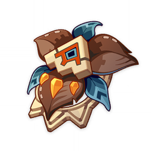
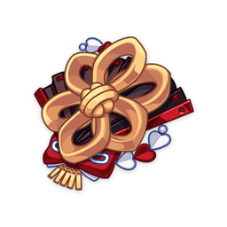

Genshin Impact · Versión 7.2
Análisis del Rol y Escalado
Xilonen es un personaje de elemento Geo originario de Natlan que utiliza Espada Ligera y se posiciona en el tier T0.5 (S) Support dentro del rol de Soporte Shredder & Healer Geo (Escala con RE y DEF). Su rendimiento en combate gira en torno a este eje principal: Reduce hasta -36% RES elemental; con su firma necesita llegar a 2,500–3,000 DEF.
Para maximizar su aporte en el equipo, la configuración prioritaria combina Himno de las Cumbres con el conjunto de artefactos Scroll of the Hero of Cinder City (4 piezas), respetando la jerarquía de estadísticas Recarga de Energía (190%+) > DEF% (2,500–3,000) > Prob. Crítica (si usa Favonius). y subiendo sus habilidades en orden: Habilidad Elemental (E) >>> Definitiva (Q) >>> Ataques Normales.
Mejores Armas
Opciones recomendadas ordenadas por rendimiento según el meta actual y compatibilidad con sus rotaciones:
-
 Himno de las Cumbres ★★★★★BiS Firma542 ATQ base, 82.7% DEF%; otorga hasta +25.6% Bono Elemental a todo el equipo con ~3,000 DEF.
Himno de las Cumbres ★★★★★BiS Firma542 ATQ base, 82.7% DEF%; otorga hasta +25.6% Bono Elemental a todo el equipo con ~3,000 DEF. -
 Juramento por la Libertad ★★★★★Alternativa Soporte 5★608 ATQ base, 198 ME; otorga +20% ATQ y +16% Daño Normal/Cargado al activar Cristalización.
Juramento por la Libertad ★★★★★Alternativa Soporte 5★608 ATQ base, 198 ME; otorga +20% ATQ y +16% Daño Normal/Cargado al activar Cristalización. -
 Espada de Favonius ★★★★Mejor 4★ General454 ATQ base, 61.3% RE; genera partículas blancas para aliviar energía del equipo.
Espada de Favonius ★★★★Mejor 4★ General454 ATQ base, 61.3% RE; genera partículas blancas para aliviar energía del equipo. -
 Flauta de Ezpitzal ★★★★Mejor F2P Forja454 ATQ base, 69.0% DEF%; excelente para llegar a 2,500+ DEF y mejorar curación.
Flauta de Ezpitzal ★★★★Mejor F2P Forja454 ATQ base, 69.0% DEF%; excelente para llegar a 2,500+ DEF y mejorar curación.
Mejores Sets de Artefactos
Combinaciones de 4 piezas o mezclas de 2 piezas para maximizar su contribución:
-

Scroll of the Hero of Cinder City (4 piezas) BiS Absoluto+40% Bono Elemental para Pyro/Hydro/Cryo/Electro y Geo al cristalizar en Noctámbulo.
-

Husk of Opulent Dreams (4 piezas) Alternativa Sub-DPS/DEF+30% DEF (2p) y hasta +24% DEF / Bono Geo si ya hay otro portador de Pergamino.
Estadísticas Principales y Secundarias
Atributos prioritarios en artefactos para un balance óptimo de daño o soporte:
| Pieza | Estadística Principal |
|---|---|
| Reloj (Arenas) | Recarga de Energía / DEF% |
| Cáliz | DEF% |
| Corona | Bono de Curación / DEF% |
Prioridad de Subestadísticas
- Recarga de Energía (190%+) > DEF% (2,500–3,000) > Prob. Crítica (si usa Favonius).
Prioridad de Talentos
Habilidad Elemental (E) >>> Definitiva (Q) >>> Ataques Normales
Objetivos de Estadísticas (Nivel 90)
Valores de referencia verificados para evaluar el equipamiento de Xilonen en nivel 90 con artefactos de 5 estrellas:
| Atributo | Meta Recomendada |
|---|---|
| Vida | 18,000 |
| Ataque | 1,100 |
| Defensa | 2,500 – 3,000 DEF |
| Maestría Elemental | 0 |
| Recarga de Energía | 190%+ ER |
| Balance Crítico | Opcional (Solo Favonius) |
Talentos de Combate y Materiales (Nivel 1 al 10)
Habilidades principales de Xilonen y desglose exacto de libros, materiales y Mora para mejorar sus talentos:


Composiciones de Equipo Recomendadas
Alineaciones con mayor sinergia elemental y amplificación de daño en el Abismo y Teatro Fantasía:
Mavuika Derretidos
Mavuika • Citlali • Xilonen • Bennett
Carga Espíritu Noctámbulo de Mavuika rapidísimo mientras aplica -36% RES Pyro.
Neuvillette Hipercarry
Neuvillette • Furina • Kazuha • Xilonen
Doble reducción de RES + Pergamino Natlan + curación para Fanfarria.
Materiales de Ascensión (Nivel 1 al 90)
Recursos totales requeridos para desbloquear las 6 fases de ascensión de Xilonen. Coste total de Mora en ascensiones: 420.000 Mora.


Sinergias y Guías Relacionadas
Explora las fichas de armas, artefactos y materiales de los principales compañeros de equipo para Xilonen: